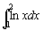

高斯-勒讓德七點定積分(II)
程式編寫日期: 2008年3月24日
以下程式使用了高斯-勒讓德法七點方法(Gauss-Legendre Quadrature)計算一個定積分的近似值，現時不少圖像計算機亦是使用相似的方法計算定積分的近似值。 準確度將取決於方法使用的點數及分割的區間數目，點數及區間越多準確度越高，但計算時間亦越長。
程式 (212 bytes，不包括綠色的函數方程)
ClrMemory: ?→A: ?→B: ?→C: . 5C-1(B - A→B:
Lbl 0: A + B+ BX: ln( Ans: Ans ( . 4179591837(Y=0)
+ . 1294849662(Y2+2=3Y) + . 2797053915(Y>2)(5>Y)
+ . 3818300505(Y>4M+: 1+Y→Y: -X→X:
Y=1 => . 9491079123→X: Y=3 => . 7415311856→X:
Y=5 => . 4058451514→X: Y-7 => Goto 0: A + 2B→A:
Rec( 0 , 0: C-1→C: Ans => Goto 0: MB
註1: 程式輸入的區間數目n是指將定積分計算的範圍分割為n個獨立區間(n為正整數)，而每一個獨立區間都會應用高斯-勒讓德七點方法計算這個區間定積分的近似值， 最後將所有區間的計算結果相加求出答案， 因此n值越大準確度越高，但計算時間亦會越長。
註2: 綠色的 ln( Ans是函數方程(變數是Ans)，若果想計算其它函數的積分，只要修改綠色的部份。
例題: 利用高斯-勒讓德七點方法(Gauss-Legendre Quadrature)及區間數目為2，計算 
按 Prog 1 再按 1 EXE 2 EXE 2 EXE (顯示答案為0.386294361)
參考資料:
http://mathworld.wolfram.com/Legendre-GaussQuadrature.html
http://en.wikipedia.org/wiki/Gaussian_quadrature
返回 CASIO fx-50FH、fx-3650P II、fx-50FH II及fx-50F PLUS 程式集